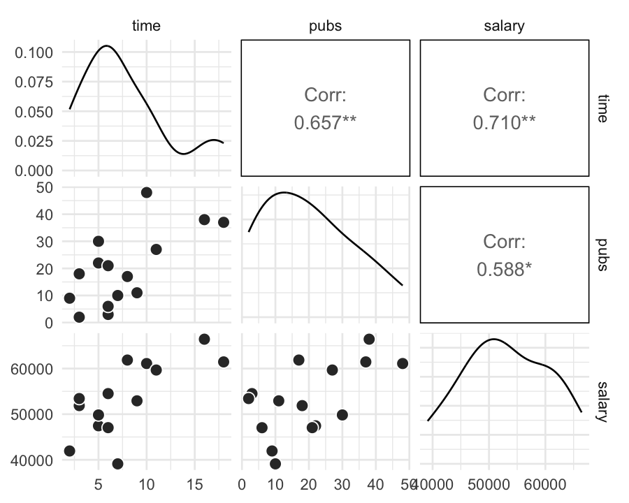
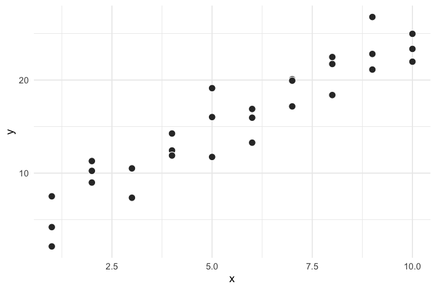
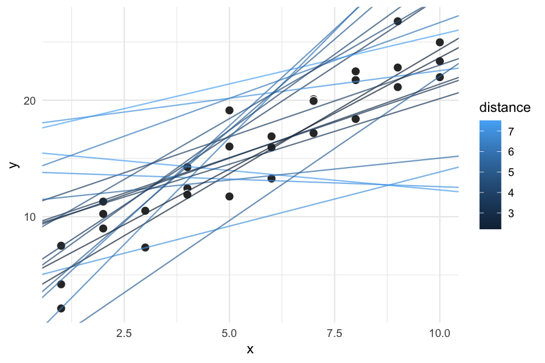
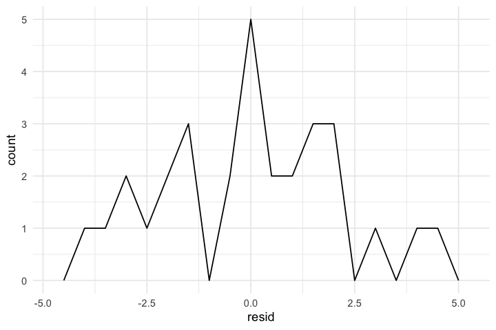
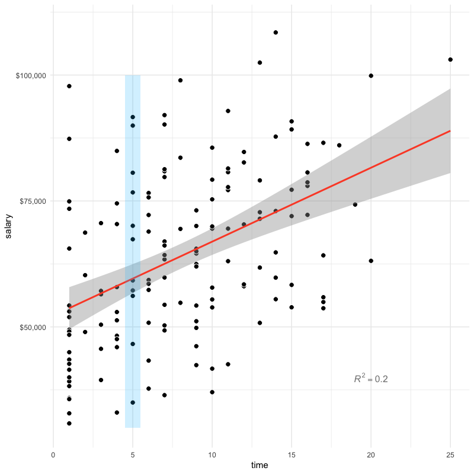
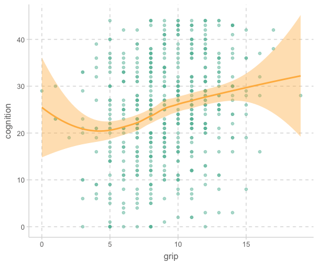
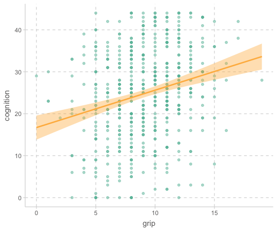
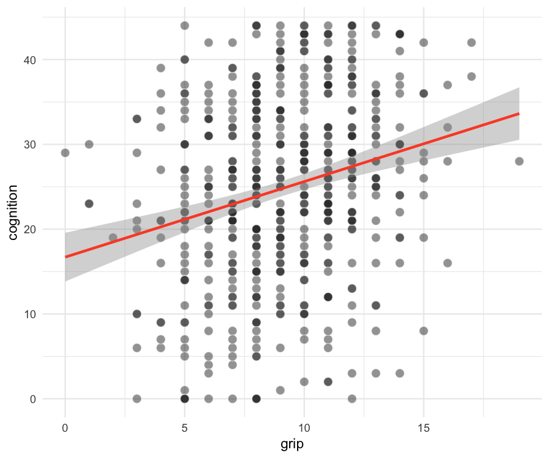
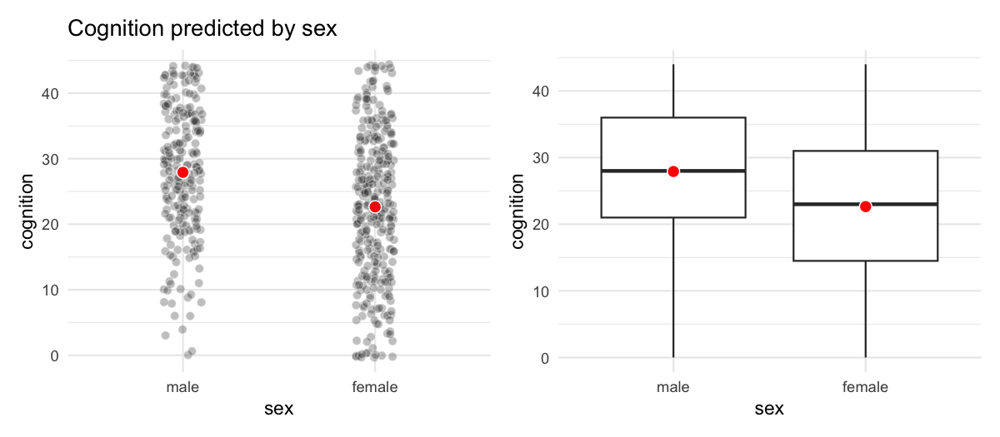

# A tibble: 15 x 3
time pubs salary
<dbl> <dbl> <dbl>
1 3 18 51876
2 6 3 54511
3 3 2 53425
4 8 17 61863
5 9 11 52926
6 6 6 47034
7 16 38 66432
8 10 48 61100
9 2 9 41934
10 5 22 47454
11 5 30 49832
12 6 21 47047
13 7 10 39115
14 11 27 59677
15 18 37 61458Correlation/Simple Regression
Applied Multiple Regression/Correlation Analysis for the Behavioral Sciences by Jacob Cohen, Patricia Cohen, Stephen G. West, Leona S. Aiken
통계에서 데이터의 타입은 대략 다음과 같이 나누어짐
- continuous / discrete
- quantitative / qualitative
- categorical unordered (nominal) / categorical ordered (ordinal)
- 성별, 지역 / 등급, 랭킹
- ordinal: 등간격을 가정
- 퀄리티 good, fair, poor는 등간격이라고 봐야하는가?
- 랭킹은?
- 선호도 1, 2, …, 8; continuous?
- 임금 구간?
- ratio, interval을 나누기도 함
- 0이 실제 의미있는 값일 때, 비율에 대해 말할 수 있음
- 무게가 2배 더 나간다.
- 날씨가 2배 더 덥다?
Correlation
A measure of association; 상관관계
Pearson’s correlation coefficient: r
Linear relationships; x와 y의 선형적 연관성; 범위 [-1, 1]
x로부터 y를 얼마나 정확히 예측할 수 있는가? (선형관계로부터)
x와 y의 정보는 얼마나 중복(redundant)되는가?

Multiple correlation coefficient: R
Extented correlation: 예측치와 관측치의 pearson’s correlation

자연에서 선형관계는 거의 관찰되지 않음
반대로, 사회과학의 지표들 사이에서는 대부분 대략적인 선형관계가 나타남
- 주요 예외로는 연령이 포함하는 관계: 나이에 따른 기억력 감퇴
Linear correlation의 계산
교수의 연봉(salary), 학위를 받은 후 지난 시간(time since Ph.D.), 출판물의 수(pubs)의 관계
Data: c0301dt.csv
The formula for Pearson’s correlation coefficient; the product moment correlation coefficient
\(X, Y\)에 대한 standardize (Z score); \(\displaystyle z_X = \frac{X-M_X}{sd_X}, \thinspace z_Y = \frac{Y-M_Y}{sd_Y}\)
\(r_{XY} = \displaystyle 1 - \frac{\sum{(z_X - z_Y)^2}}{2n}\) \(z_X, z_Y\) : 각각 standardized \(X, Y\)
\(r_{XY} = \displaystyle\frac{\sum_{i=1}^{n}{(x_i - \bar x)(y_i - \bar y)}}{\sqrt{\sum_{i=1}^{n}{(x_i - \bar x)^2}} \sqrt{\sum_{i=1}^{n}{(y_i - \bar y)^2}}}\) \(\bar x : X\) 의 평균, \(\bar y :Y\) 의 평균
df <- acad0 |>
mutate(
z_time = (time - mean(time)) / sd(time),
z_pubs = (pubs - mean(pubs)) / sd(pubs),
diff = z_time - z_pubs,
squared = diff^2
) |>
print()# A tibble: 15 × 7
time pubs salary z_time z_pubs diff squared
<dbl> <dbl> <dbl> <dbl> <dbl> <dbl> <dbl>
1 3 18 51876 -1.02 -0.140 -0.880 0.774
2 6 3 54511 -0.364 -1.23 0.861 0.741
3 3 2 53425 -1.02 -1.30 0.278 0.0772
4 8 17 61863 0.0728 -0.212 0.285 0.0812
5 9 11 52926 0.291 -0.646 0.938 0.879
6 6 6 47034 -0.364 -1.01 0.644 0.415
7 16 38 66432 1.82 1.31 0.514 0.264
8 10 48 61100 0.510 2.03 -1.52 2.31
9 2 9 41934 -1.24 -0.791 -0.447 0.200
10 5 22 47454 -0.583 0.150 -0.732 0.536
11 5 30 49832 -0.583 0.728 -1.31 1.72
12 6 21 47047 -0.364 0.0772 -0.441 0.195
13 7 10 39115 -0.146 -0.719 0.573 0.328
14 11 27 59677 0.728 0.511 0.217 0.0471
15 18 37 61458 2.26 1.23 1.02 1.05 print(1 - sum(df$squared) / (2 * 14))[1] 0.6566546cor(acad0) |>
round(2) |> # 반올림 함수
print() time pubs salary
time 1.00 0.66 0.71
pubs 0.66 1.00 0.59
salary 0.71 0.59 1.00상관계수 크기에 대한 guidline
- \(| \thinspace r\thinspace|<0.3\): weak
- \(0.3\le|\thinspace r\thinspace|<0.5\): moderate
- \(|\thinspace r\thinspace|>0.5\) : strong relationship
상관계수를 제곱한 \(r^2\) 는 변량의 설명 정도를 나타내주는 계수; 결정계수 (\(R^2\), \(R\) squared)
이는 좀 더 해석가능한 값이 되고, strength of association를 나타내는 주요한 지표임.
뒤에서 자세히 다룸.
Tip
# Base R의 cor()의 옵션들
cor(acad0, use = "pairwise.complete.obs") # NA의 처리: pairwise deletion
# psych 패키지의 corr.test() 또는 lowerCor()이용
library(psych)
corr.test(acad0) # NA를 pairwise deletion으로 처리해줌
## Correlation matrix
## time pubs salary
## time 1.00 0.66 0.71
## pubs 0.66 1.00 0.59
## salary 0.71 0.59 1.00
## Sample Size
## [1] 15
## Probability values (Entries above the diagonal are adjusted for multiple tests.)
## time pubs salary
## time 0.00 0.02 0.01
## pubs 0.01 0.00 0.02
## salary 0.00 0.02 0.00
##
## To see confidence intervals of the correlations, print with the short=FALSE option
lowerCor(acad0)
## time pubs salary
## time 1.00
## pubs 0.66 1.00
## salary 0.71 0.59 1.00시각화를 통한 상관계수
corrgram(), ggpairs()
library(corrgram)
corrgram(acad0,
order = TRUE, # 상관계수가 높은 변수들을 가까이 위치시킴
upper.panel = panel.cor, # 상관계수
lower.panel = panel.pie, # 파이 차트
)
tip: use a function
corgrm <- function(df, order = TRUE){
corrgram(df,
order = order, # 상관계수가 높은 변수들을 가까이 위치시킴
upper.panel = panel.cor, # 상관계수
lower.panel = panel.pie, # 파이 차트
)
}
corgrm(acad0)
corgrm(acad0, order = FALSE)Data from the 1985 Current Population Survey (CPS85)
임금, 교육수준, 연차, 나이, 성별 간의 상관관계
cps <- mosaicData::CPS85
cps |>
select(wage, educ, exper, age, sex) |>
mutate(sex = as.numeric(sex)) |> # factor를 숫자로 변환: 1, 2, ...
corrgram(
order = TRUE,
upper.panel = panel.cor,
lower.panel = panel.pie,
)corrgram(acad0,
order = FALSE,
lower.panel = panel.pts,
upper.panel = panel.cor,
diag.panel = panel.density
)# GGally 패키지의 ggpairs()
GGally::ggpairs(acad0)
Tip: includes fitted lines
trendlines <- function(data, mapping, ...){
ggplot(data = data, mapping = mapping) +
geom_point(alpha = .6) +
geom_smooth(method = loess, se = FALSE, color = "orange", ...) +
geom_smooth(method = lm, se = FALSE, color = "skyblue", ...)
}
ggpairs(acad0, columns = 1:3, lower = list(continuous = trendlines))
Note
명목변수인 경우에도 measure of association을 계산하는 방법이 있는데, 자세한 사항은 Measures of Association - How to Choose? 참조
R에서 계산은 psych::corr.test()의 옵션 method를 “pearson”, “spearman”, “kendall” 중 선택
명목변수의 예
- 한 변수가 binary 인 경우: 물건의 가격 ~ 구매 여부
- 두 변수가 모두 binary 인 경우: 남녀 ~ 합격 여부
- 두 변수가 rank(ordinal) 인 경우: 다이아몬드 투명도(clarity)와 컬러(color)
binary인 경우: 0, 1로 코딩
rank인 경우: 1, 2, 3… 로 코딩
Regression
Simple linear/regression models
단순한 상관관계를 넘어서서,
Y가 X에 의해 영향을 받거나 X에 의해 예측되는 변수라는 연구자의 가정이 있음.
- Y: 종속변수 (dependent variable), regressand, response
- X: 독립변수 (independent variable), regressor, 예측변수 (predictor)
선형관계임을 가정하고, 데이터에 가장 근접한 직선을 구함
이 직선을 주어진 데이터로부터 두 변수 간의 관계를 가장 잘 represent하는 model (모형)이라고 말함.
이는 확장된 의미에서 물리법칙에서 변수 간의 관계를 수학식으로 표현하고, 자연현상을 모델링한 것으로 이해할 수 있는 것과 같음.
예를 들어, 다음과 같이 x와 y의 관계가 나타난 경우,
- 패턴: 강한 선형 관계

x와 y의 관계에 대한 모형을 세우는데, 모형은 두 부분으로 나눌 수 있음.
A family of models를 정의: generic 패턴을 표현해 줄 수 있는 모델 타입
예를 들어,
만약, 선형적인 관계라면 선형 모델인 \(y = a_2 x + a_1\)
곡선 관계라면 가령, \(y = a_3 x^2 + a_2 x + a_1\)
\(a_1, a_2, a_3\)는 패턴을 잡아 낼수 있도록 변하는 파라미터
A fitted model을 생성: 데이터에 가장 가까운(적합한) 파라미터에 해당하는 특정 모델을 선택;
”fit a model to data”예를 들어,
- \(y = 3x+7\)
- \(y = 2x^2 - 4x + 1\)
A fitted model은 a family of models 중에 데이터에 가장 가까운 모델임
- 이는 소위 “best” model일 뿐
- “good” model임을 뜻하지 않고, “true” model임을 뜻하는 것은 더더욱 아님
이제 위의 예를 보면, 선형성을 가정하고
- 선형 모델 family인 \(y = a_2 x + a_1\)을 세울 수 있음
- 무수히 많은 \(a_1, a_2\)의 값들 중 위 데이터에 가장 가까운 값을 찾음
- 이를 “fit a model to data”라고 하고, 그 특정 모델을 fitted model이라고 함
- 가깝다는 것을 정의하기 위해 데이터와 모델과의 거리를 정의해야 함; \(d =|~data - model~|\)
- 대표적으로 모델과 데이터의 수직 차이 (잔차; residuals)의 총체로 거리를 정의할 수 있음
- 최적의 모델은 이 거리를 최소로 함


Note
- 특히, 다음과 같은 RMSE (root-mean-square deviation)을 기본적인 거리로 정의하고
\(RMSE = \displaystyle\sqrt{\frac{1}{n} \sum_{i=1}^{n}{(Y_i -\hat Y_i)^2}},\) \(Y_i -\hat Y_i\) : residual (잔차)
- Mean absolute error: \(MAE = \displaystyle\frac{1}{n} \sum_{i=1}^{n}{|~Y_i -\hat Y_i~|}\)
- 이상치에 덜 민감함
이 거리를 이용해서 모델의 파라미터를 추정하는 것을 ordinary least square (OLS) esimate이라고 함
- 이 때, 잔차의 합은 0; \(\displaystyle \sum_{i=1}^{n}{(Y_i -\hat Y_i)} = 0\)
이제, 위 예제의 데이터와 꽤 가까운 임의의 20개의 선형 모델을 그려보면 다음과 같고, 이 중 거리가 최소인 모델이 fitted model이 됨
- 이 때, fitted model의 기울기는 2.05, y절편은 4.22임

R은 여러 형태의 a family of models을 구성할 수 있는 효율적인 툴을 제공
- Linear (regression) models: \(Y = a_0 + a_1 X_1 + a_2 X_2 + ~... ~ + a_n X_n\)
앞의 예는 \(n=1\) 에 해당하며, \(Y =a_0 +a_1X_1\)에 대해서 다음과 같이 편리하게 적용할 수 있음
sim1_mod <- lm(y ~ x, data = sim1) coef(sim1_mod) # 모델의 parameter 즉, coefficients를 내줌 #> (Intercept) x #> 4.220822 2.051533 # 위에서 구한 파라미터값과 동일함- 즉, 앞의 데이터에 최적인 선형 모형은 \(Y = 4.22 + 2.05X\)
lm()은 formulay ~ x를 \(Y =a_0 +a_1X\) 로 변환해 줌; Y 절편은 formula에서 생략- Linear models의 경우 위에서 처럼 수치 을 이용하지 않고 방정식의 해를 구하듯 exact form으로 최소값을 구함
- 즉, 앞의 데이터에 최적인 선형 모형은 \(Y = 4.22 + 2.05X\)
\(n=2\) 인 경우인 두 변수 \(X_1\), \(X_2\)로 \(Y\)를 예측하는 경우,
lm(y ~ x1 + x2, data = df)
Note
This formula notation is called “Wilkinson-Rogers notation”, and was initially described in Symbolic Description of Factorial Models for Analysis of Variance by G. N. Wilkinson and C. E. Rogers
위에서 y ~ x라는 formula는 x, y라는 변수를 바로 evaluate하지 않고, \(Y = a_0 + a_1X\)로 해석되어 함수로 전환됨
Visualising models
Fitted models을 이해하기 위해 모델이 예측하는 부분(prediction)과 모델이 놓친 부분(residuals)을 시각화해서 보는 것이 유용함
Predictions: the pattern that the model has captured
Residuals: what the model has missed; 통계 분석의 핵심 요소
앞서 구한 모형 \(Y = 4.22 + 2.05X\) 을 데이터와 함께 그려보면,

이 모형에 의한 예측값들(pred)과 잔차(resid)들은
# A tibble: 30 × 4
x y pred resid
<int> <dbl> <dbl> <dbl>
1 1 4.20 6.27 -2.07
2 1 7.51 6.27 1.24
3 1 2.13 6.27 -4.15
4 2 8.99 8.32 0.665
5 2 10.2 8.32 1.92
6 2 11.3 8.32 2.97
7 3 7.36 10.4 -3.02
8 3 10.5 10.4 0.130
# … with 22 more rowsResiduals의 분포를 시각화해서 살펴보면,
- residuals의 평균은 항상 0
- residuals의 분포는 predictions이 관측치로부터 전반적으로 얼마나 벗어났는지에 평가할 수 있음

예측 변수와 residuals의 관계를 시각화해서 보면,
- 이 residuals은 특별한 패턴을 보이지 않아야 모델이 데이터의 패턴을 잘 잡아낸 것으로 판단할 수 있음
- 또한 어떤 부분에서 예측이 벗어났는지도 판별할 수 있음

- Residuals에 패턴이 보이는 경우: 모형을 수정!

Case 1
교수의 연봉(salary)이 학위를 받은 후 지난 시간(time since Ph.D.)과 출판물의 수(pubs)에 의해 어떻게 영향을 받는가?

# A tibble: 15 × 3
time pubs salary
<dbl> <dbl> <dbl>
1 3 18 51876
2 6 3 54511
3 3 2 53425
4 8 17 61863
5 9 11 52926
6 6 6 47034
# … with 9 more rows모형 세우기
선형모형: lm(y ~ x)
- \(\hat{Y} = a_0 + a_1X\), (\(\hat{Y}\): 예측치)
- 또는 \(Y = a_0 + a_1X +e\), (\(Y\): 관측치, \(e\): 잔차, 에러)
- \(a_1\): 기울기 (\(X\)가 1 증가할 때, \(Y\)의 증가량), \(a_0\): 절편 (\(X\)가 0일 때, \(Y\)의 값)

mod1 <- lm(salary ~ time, data = acad0): \(\widehat{salary} = a_0 + a_1time\)
mod2 <- lm(salary ~ pubs, data = acad0): \(\widehat{salary} = a_0 + a_1pubs\)
Fit a model to data
데이터에 가장 근접한 모델
mod1 <- lm(salary ~ time, data = acad0)
mod2 <- lm(salary ~ pubs, data = acad0)
coef(mod1)
## (Intercept) time
## 43658.594 1224.392
coef(mod2)
## (Intercept) pubs
## 46357.449 335.526Model 1: \(\widehat{salary} = \$43,659 + \$1,224\:time\)
\(a_1\): 학위를 받은 후 1년이 지날 때마다, 연봉은 $1,224 오름 (표현에 주의!)
\(a_0\): 학위를 받은 후 0년일 때, 연봉은 $43,658; 0년이 의미있는가?Model 2 : \(\widehat{salary} = \$46,357 + \$336\:pubs\)
\(a_1\): 출판물 1편을 추가로 발표하면, 연봉은 $336 오름 (표현에 주의!)
\(a_0\): 출판물이 0편일 때, 연봉은 $46,357
연봉(salary)을 연차(time)로 예측하는 모델(mod1)에 대해서 prediction과 residuals 값을 구해보면
단, 간편한 계산을 위해 salary를 1000으로 나누었으며, 51.876는 $51,876을 의미
아래 테이블에서 가령, 6년차인 교수의 연봉은 모형에 의해 $51,000로 예측되고,
2번째 교수의 경우 그 예측이 $3,510 정도 낮게 예측되었으며,
6번째 교수의 경우는 $3,9700 정도 높게 예측되었음
예측이 틀린 정도, 즉 잔차는 왜 생기는가? …
Important모형의 분석은 예측/설명되는 부분과 예측/설명되지 않는 부분으로 쪼개어 보는 것이 기본적인 시각
예들 들어, 연차로 연봉을 설명할 수는 있는 부분 vs. 연차로 연봉이 설명되지 않는 부분!
time salary pred resid (pred-m)^2 resid^2 (salary-m)^2
1 3 51.88 47.33 4.54 32.65 20.65 1.37
2 6 54.51 51.00 3.51 4.16 12.29 2.15
3 3 53.42 47.33 6.09 32.65 37.13 0.14
4 8 61.86 53.45 8.41 0.17 70.72 77.75
5 9 52.93 54.68 -1.75 2.67 3.07 0.01
6 6 47.03 51.00 -3.97 4.16 15.77 36.14
7 16 66.43 63.25 3.18 104.11 10.13 179.20
8 10 61.10 55.90 5.20 8.16 27.01 64.87
9 2 41.93 46.11 -4.17 48.14 17.42 123.47
10 5 47.45 49.78 -2.33 10.66 5.41 31.27
11 5 49.83 49.78 0.05 10.66 0.00 10.33
12 6 47.05 51.00 -3.96 4.16 15.67 35.98
13 7 39.12 52.23 -13.11 0.67 171.99 194.06
14 11 59.68 57.13 2.55 16.66 6.50 43.98
15 18 61.46 65.70 -4.24 160.07 17.97 70.77
graphical representation

Column별로 더하면
time salary pred resid (pred-m)^2 resid^2 (salary-m)^2
1 115 795.68 795.68 0 439.75 431.73 871.48우선, 연봉의 합 \(\sum{Y}\) = 예측값의 합 \(\sum{\hat{Y}}\) : \(X\) 의 평균은 모형에 의해 Y의 평균으로 예측됨
Important
Partitioning of variances
\(\sum{(\hat{Y}-m)^2}=439.75\) : 연차의 변량 (variation)으로 모형에 의해 설명되는 (attribute/acount for) 연봉의 변량
\(\sum{(Y-\hat{Y})^2}=431.73\) : 연차의 변량 (variation)으로 모형에 의해 설명될 수 없는 (not attribute) 연봉의 변량
\(\sum{(Y-m)^2}=871.48\) : 연봉의 변량
이 세 값의 관계는 \(\sum{(\hat{Y}-m)^2} + \sum{(Y-\hat{Y})^2} = \sum{(Y-m)^2}\)
- Sum of squares (SS)로 부르며,
- SSR, SSE, SSY (각각 sum of squares of Regression, Error, Y)
위 값을 다시 N(=15)으로 나누면, 즉 column별 평균은
time salary pred resid (pred-m)^2 resid^2 (salary-m)^2
1 7.67 53.05 53.05 0 29.32 28.78 58.1위의 관계는 variance (분산)으로 보면,
\(V(predictions) + V(residuals) = V(Y)\)
이렇게 간결하게 쪼개지는 것은 predictions과 residuals이 서로 독립(\(r=0\))이 되기 때문으로 이해할 수 있음
predictions \(\hat{Y}\) 은 \(X\) 의 일차 함수식으로 얻어진 것이므로 \(X\) 와 \(r=1\) 이 되고,
residuals \(Y-\hat{Y}=Y-T(X)\) 과 \(\hat{Y}\)이 상관이 있다면, \(X\) 와 \(Y-\hat{Y}\) 과의 상관이 존재해야하는데, 이는 OLS estimate에 어긋남
# correlations with residuals # pred time salary # resid 0.00 0.00 0.704 # salary 0.71 0.71 1.000
다시 위의 식에서 \(V(Y)\) 로 양변을 나누면
\(\displaystyle\frac{V(predictions)}{V(Y)} + \frac{V(residuals)}{V(Y)} = 1\)
Important
즉, “모형에 의해 설명되는 \(Y\) 변량의 비율” + “모형에 의해 설명되지 않는 \(Y\) 변량의 비율” = 1
첫 항을 \(R^2\) 라고 하고, 결정계수 혹은 R squared라고 부름
따라서, \(1-R^2\) 는 설명되지 않는 변량의 비율이라고 할 수 있음
\(R^2\) 를 제곱근하면 \(R\) 이 나오고, 이는 Pearson’s correlation coefficient와 동일함;
- \(R = cor(Y, X) = cor(Y, \hat{Y}=aX+b), ~a = r_{XY} \frac{sd_Y}{sd_X}\)
- \(R\) 은 예측의 정확성에 대한 지표라고 이해할 수 있음
Overlap in variance of correlated variables
ANOVA
모형 자체에 대한 분석으로 ANOVA 결과는 anova()함수를 써서 볼 수 있음
모집단에 대한 추론: 모형의 설명력이 모집단에서 0은 아닐 것이라는 추론;
- Null 모형 대비 주어진 모형이 잔차를 얼마나 줄였는가를 테스트함으로써 주어진 모형의 설명력이 0은 아님을 보임
- Null 모형:
y ~ 1(예측변수가 없는 모형, 설명력 0)
- Null 모형:
- 잔차 변량(SSE) 대비 예측 변량(SSR)이 얼마나 큰가를 F분포를 이용해 통계적 추론이 이루어짐
- [주어진 모형의 잔차 변량 (SSE)] - [null 모형의 잔차 변량] = SSE - SSY = SSR
- 즉, 추가된 예측 변수에 의해 설명되는 변량 정도가 sampling error, 즉 표본 추출에 따른 우연성에 의해 나타날 수 있을 확률을 계산
anova(mod1)
# Analysis of Variance Table
# Response: salary
# Df Sum Sq Mean Sq F value Pr(>F)
# time 1 439.75 439.75 13.241 0.003 **
# Residuals 13 431.73 33.21
# ---
# Signif. codes: 0 ‘***’ 0.001 ‘**’ 0.01 ‘*’ 0.05 ‘.’ 0.1 ‘ ’ 1- 대략, (예측변수로 설명되지 않는 Y인) 잔차의 평균 변량: \(\sqrt{mean~of~SSE} = \sqrt{33.21} = 5.763\)
- 대략 말하면, 모형이 예측한 연봉과 실제 연봉의 차이는 평균 $5,763 정도 된다는 것을 의미함
모형 \(\widehat{salary} = a_0 + a_1time\) 에 대한
SPSS 결과 테이블:
summary(mod1)
Call:
lm(formula = salary ~ time, data = df)
Residuals:
Min 1Q Median 3Q Max
-13.1143 -3.9644 0.0514 4.0251 8.4093
Coefficients:
Estimate Std. Error t value Pr(>|t|)
(Intercept) 43.6586 2.9780 14.660 1.83e-09 ***
time 1.2244 0.3365 3.639 0.003 **
---
Signif. codes: 0 ‘***’ 0.001 ‘**’ 0.01 ‘*’ 0.05 ‘.’ 0.1 ‘ ’ 1
Residual standard error: 5.763 on 13 degrees of freedom
Multiple R-squared: 0.5046, Adjusted R-squared: 0.4665
F-statistic: 13.24 on 1 and 13 DF, p-value: 0.003
Important
\(R^2\) 는 모형이 predictor들로부터 Y의 변량을 얼마나 예측/설명해주는지에 대한 지표로서 가장 널리 쓰임.
다음의 두 경우는 1년의 연차가 $1,224의 연봉 증가로 나타나는 동일한 관계를 보여주지만, 그 strength of association에는 큰 차이가 있음
Exercises
출판물의 수(pubs)가 연봉(salary)에 어떻게 영향을 미치는지 살펴보세요.
Case 2
다음 데이터는 the Octogenarian Twin Study of Aging에서 나타나는 패턴을 기반으로 생성한 데이터
출처: Longitudinal Analysis: Modeling Within-Person Fluctuation and Change by Lesa Hoffman
includes 550 older adults age 80 to 97 years.
Cognition was assessed by the Information Test, a measure of general world knowledge (i.e., crystallized intelligence; range = 0 to 44)
demgroup 1: those who will not be diagnosed with dementia (none group = 1; 72.55%),
demgroup 2: those who will eventually be diagnosed with dementia later in the study (future group = 2; 19.82%)
demgroup 3: those who already have been diagnosed with dementia (current group = 3; 7.64%)
cognition <- read_csv("data/spss_chapter2.csv")
cognition |> print()# A tibble: 550 x 6
PersonID cognition age grip sexMW demgroup
<dbl> <dbl> <dbl> <dbl> <dbl> <dbl>
1 1 23 92.6 9 1 1
2 2 24 91.8 11 0 2
3 3 29 92.6 12 0 1
4 4 16 94.4 6 1 1
5 5 27 85.8 9 1 1
6 6 37 83.1 11 0 1
# i 544 more rows
code for ggpairs
trendlines <- function(data, mapping, ...){
ggplot(data = data, mapping = mapping) +
geom_point(alpha = .6) +
geom_smooth(method = loess, se = FALSE, color = "orange", ...) +
geom_smooth(method = lm, se = FALSE, color = "skyblue", ...)
}
ggpairs2 <- function(data, ...) {
GGally::ggpairs(data, lower = list(continuous = trendlines))
}
ggpairs2(cognition, columns = 2:6)
library(psych)
corr.test(cognition[-1])$r |> # r만 선택, inference부분 제외
round(2) |>
print() cognition age grip sexMW demgroup
cognition 1.00 -0.17 0.24 -0.24 -0.41
age -0.17 1.00 -0.18 0.05 0.01
grip 0.24 -0.18 1.00 -0.40 0.04
sexMW -0.24 0.05 -0.40 1.00 0.01
demgroup -0.41 0.01 0.04 0.01 1.00
Tip
cognition |>
select(cognition, age, grip) |>
corr.test()
cognition age grip
# cognition 1.00 -0.17 0.24
# age -0.17 1.00 -0.18
# grip 0.24 -0.18 1.00
corr.test(cognition["cognition"], cognition[c("age", "grip")])
# Correlation matrix
# age grip
# cognition -0.17 0.24cognition |>
ggplot(aes(x = grip, y = cognition)) +
geom_point(alpha=.5) +
geom_smooth()
mod_cog <- lm(cognition ~ grip, data = cognition)
summary(mod_cog)
Call:
lm(formula = cognition ~ grip, data = cognition)
Residuals:
Min 1Q Median 3Q Max
-27.3941 -7.1578 0.3877 8.8377 22.8422
Coefficients:
Estimate Std. Error t value Pr(>|t|)
(Intercept) 16.7033 1.4640 11.409 < 2e-16 ***
grip 0.8909 0.1527 5.834 9.24e-09 ***
---
Signif. codes: 0 '***' 0.001 '**' 0.01 '*' 0.05 '.' 0.1 ' ' 1
Residual standard error: 10.67 on 548 degrees of freedom
Multiple R-squared: 0.05848, Adjusted R-squared: 0.05677
F-statistic: 34.04 on 1 and 548 DF, p-value: 9.244e-09- 기울기 0.89를 의미있게 해석할 수 있는가?
- 절편 16.7은?
- \(R^2\) = 0.058; 악력의 변량으로 인지능력 변량의 5.8%가 설명됨
Tip: summ()
library(jtools)
summ(mod_cog)
# MODEL INFO:
# Observations: 550
# Dependent Variable: cognition
# Type: OLS linear regression
# MODEL FIT:
# F(1,548) = 34.04, p = 0.00
# R<U+00B2> = 0.06
# Adj. R<U+00B2> = 0.06
# Standard errors: OLS
# ------------------------------------------------
# Est. S.E. t val. p
# ----------------- ------- ------ -------- ------
# (Intercept) 16.70 1.46 11.41 0.00
# grip 0.89 0.15 5.83 0.00
# ------------------------------------------------변수의 표준화
standardize/normalize: \(\displaystyle z = \frac{x-m}{sd}; ~ax+b\) : zoom + translate
- 변수를 표준화하면 평균이 0이고, 표준편차가 1로 변환
- 변수가 대략적으로 정규분포(normal distribution)을 따를 때,
- 내재적인 단위가 없는 측정치들의 경우 그 값을 표준화시키면 해석이 용이하며,
- 표준편차(sd)가 그 눈금/단위가 됨으로써 변수에 상관없이 동일한 눈금을 갖게 되어, 변수들 간의 비교가 가능해짐
- 즉, 표준화된 변수의 1은 1sd를 의미
- 또한, 평균이 0이 됨으로써 선형모형에서 용이한 trick을 제공해 줌
- 변수를 표준화해도 사실상 중요한 통계치는 변화하지 않음; 상관계수, \(R^2\), \(p\) value 등
- 좀 더 일반적으로 linear transform에 의해서 변하지 않음; 온도 C/F
- 반면, 주어진 샘플의 평균과 표준편차를 사용하므로 샘플마다 변동이 생길 수 있음을 인지해야 함.
cognition <- cognition |>
select(cog_std = cognition, grip_std = grip) |>
scale() |> # standardize 함수
bind_cols(cognition) # column bind: 열 방향으로 두 데이터프레임을 붙힘
cognition |> print()# A tibble: 550 x 8
cog_std grip_std PersonID cognition age grip sexMW demgroup
<dbl> <dbl> <dbl> <dbl> <dbl> <dbl> <dbl> <dbl>
1 -0.166 -0.0378 1 23 92.6 9 1 1
2 -0.0748 0.633 2 24 91.8 11 0 2
3 0.380 0.968 3 29 92.6 12 0 1
4 -0.803 -1.04 4 16 94.4 6 1 1
5 0.198 -0.0378 5 27 85.8 9 1 1
6 1.11 0.633 6 37 83.1 11 0 1
# i 544 more rowscognition |>
ggplot(aes(x = grip_std, y = cog_std)) +
geom_point(alpha=.5) +
geom_smooth(method=lm)
cognition |>
ggplot(aes(x = grip, y = cognition)) +
geom_point(alpha=.5) +
geom_smooth(method=lm)
library(ggpubr)
cognition |>
ggplot(aes(x = cognition, y = after_stat(density))) +
geom_freqpoly(binwidth=2) +
stat_overlay_normal_density(color = "red")
cognition |>
ggplot(aes(x = grip, y = after_stat(density))) +
geom_freqpoly(binwidth=1) +
stat_overlay_normal_density(color = "red")
Normal distribution 정규 분포; 사실상 sd만으로 결정되는 분포 곡선

Source: The Truthful Art by Albert Cairo
mod_cog_std <- lm(cog_std ~ grip_std, data = cognition)
summary(mod_cog_std) |> print(digits = 2)
Call:
lm(formula = cog_std ~ grip_std, data = cognition)
Residuals:
Min 1Q Median 3Q Max
-2.493 -0.651 0.035 0.804 2.079
Coefficients:
Estimate Std. Error t value Pr(>|t|)
(Intercept) 1.2e-16 4.1e-02 0.0 1
grip_std 2.4e-01 4.1e-02 5.8 9e-09 ***
---
Signif. codes: 0 '***' 0.001 '**' 0.01 '*' 0.05 '.' 0.1 ' ' 1
Residual standard error: 0.97 on 548 degrees of freedom
Multiple R-squared: 0.058, Adjusted R-squared: 0.057
F-statistic: 34 on 1 and 548 DF, p-value: 9.2e-09
- \(R^2\) 와 p values는 변함이 없으며, y intercept (y 절편)은 0
- 기울기 0.24는 두 변수 간의 Pearson’s 상관계수와 같음
Tip:
summ(df, scale = TRUE, transform.response = TRUE)
library(jtools)
# scale: predictors 표준화, transform.response: response 표준화
summ(mod_cog_std, scale = TRUE, transform.response = TRUE) # digits = 3, center = TRUE
# ------------------------------------------------
# Est. S.E. t val. p
# ----------------- ------- ------ -------- ------
# (Intercept) -0.00 0.04 -0.00 1.00
# grip_std 0.24 0.04 5.83 0.00
# ------------------------------------------------
# Continuous variables are mean-centered and scaled by 1 s.d.Case 3
성별에 따라 인지능력(cognition)에 차이가 있는가?
성별에 따라 악력(grip)에 차이가 있는가?
cognition <- cognition |>
mutate(sex = factor(sexMW, levels = c(0, 1), labels = c("male", "female")))
cognition |> print()# A tibble: 550 x 9
cog_std grip_std PersonID cognition age grip sexMW demgroup sex
<dbl> <dbl> <dbl> <dbl> <dbl> <dbl> <dbl> <dbl> <fct>
1 -0.166 -0.0378 1 23 92.6 9 1 1 female
2 -0.0748 0.633 2 24 91.8 11 0 2 male
3 0.380 0.968 3 29 92.6 12 0 1 male
4 -0.803 -1.04 4 16 94.4 6 1 1 female
5 0.198 -0.0378 5 27 85.8 9 1 1 female
6 1.11 0.633 6 37 83.1 11 0 1 male
# i 544 more rowsCode
p1 <- cognition |>
ggplot(aes(x = sex, y = cognition)) +
geom_jitter(width = .1, alpha = .3) +
stat_summary(fun = mean, geom = "point", size = 3, color = "red") +
labs(title="Cognition predicted by sex")
p2 <- cognition |>
ggplot(aes(x = sex, y = cognition)) +
geom_boxplot() +
stat_summary(fun = mean, geom = "point", size = 3, color = "red")
library(patchwork)
p1 + p2Code
p1 <- cognition |>
ggplot(aes(x = sex, y = grip)) +
geom_jitter(width = .1, alpha = .3) +
stat_summary(fun = mean, geom = "point", color = "red", size = 3) +
stat_summary(aes(x = as.numeric(sex)), fun = mean, geom = "line", color = "red") +
labs(title = "Grip predicted by sex")
p2 <- cognition |>
ggplot(aes(x = sex, y = grip)) +
geom_boxplot() +
stat_summary(fun = mean, geom = "point", size = 3, color = "red")
p3 <- cognition |>
ggplot(aes(x = grip, color = sex)) +
geom_density(alpha = .6, bw = 1.5)
library(patchwork)
p1 + p2 + p3 + plot_layout(nrow = 2)
성별(sex)로 악력(grip)을 예측하는 모형을 세우면,
library(jtools)
mod_grip <- lm(grip ~ sex, data = cognition)
summ(mod_grip, model.info = FALSE)MODEL FIT: F(1,548) = 106.41, p = 0.00 R<U+00B2> = 0.16 Adj. R<U+00B2> = 0.16 Standard errors: OLS ------------------------------------------------ Est. S.E. t val. p ----------------- ------- ------ -------- ------ (Intercept) 10.55 0.18 58.16 0.00 sexfemale -2.44 0.24 -10.32 0.00 ------------------------------------------------
Model: \(\widehat{grip} = -2.44\cdot sexfemale + 10.55\)
우선, 잔차의 합이 0이므로 \(\displaystyle \sum_{i=1}^{n}{(y_i - \hat{y})} = 0,~~ \hat{y} = \frac{\sum_{i=1}^{n}{y_i}}{n}\) for each \(x\)
즉, 각 카테고리 값에 대해서 모형은 평균으로 예측
- 기울기 -2.44는 남성과 여성의 평균 악력 차이를 의미함; 남성(0)에서 여성(1)로 1증가할 때, 악력의 증가량
- 절편 10.55는 남성(0)일 때의 평균 악력을 의미함.
- 따라서, 여성의 평균 약력은 -2.44 * (1) + 10.55 = 8.11
- \(R^2\)= 0.16; 성별로 악력의 변량의 16%를 설명할 수 있음.
# A tibble: 550 x 5
grip sex sexfemale pred resid
<dbl> <fct> <dbl> <dbl> <dbl>
1 9 female 1 8.11 0.895
2 11 male 0 10.5 0.454
3 12 male 0 10.5 1.45
4 6 female 1 8.11 -2.11
5 9 female 1 8.11 0.895
6 11 male 0 10.5 0.454
7 10 female 1 8.11 1.89
8 9 male 0 10.5 -1.55
9 11 male 0 10.5 0.454
10 10 male 0 10.5 -0.546
# i 540 more rowsanova(mod_grip) |> print()Analysis of Variance Table
Response: grip
Df Sum Sq Mean Sq F value Pr(>F)
sex 1 794.3 794.33 106.41 < 2.2e-16 ***
Residuals 548 4090.7 7.46
---
Signif. codes: 0 '***' 0.001 '**' 0.01 '*' 0.05 '.' 0.1 ' ' 1model_matrix(cognition, formula = grip ~ sex) |> print()# A tibble: 550 x 2
`(Intercept)` sexfemale
<dbl> <dbl>
1 1 1
2 1 0
3 1 0
4 1 1
5 1 1
6 1 0
# i 544 more rows
Note
전통적으로 카테고리 변수에 대한 분석은 ANOVA 프레임워크에서 실시되었음.
특히, 위의 경우와 같이 두 집단 간의 차이, 즉 남성과 여성의 약력의 평균 차이를 분석할 때 t-test를 실시.
t.test(grip ~ sex, data = cognition, var.equal = TRUE) # varance가 동일하다는 가정
# Two Sample t-test
# data: grip by sex
# t = 10.316, df = 548, p-value < 2.2e-16
# alternative hypothesis: true difference in means between group male and group female is not equal to 0
# 95 percent confidence interval:
# 1.976174 2.905811
# sample estimates:
# mean in group male mean in group female
# 10.546256 8.105263
Note
Formula는 factor/카테고리 변수가 predictor인 경우 카테고리 값(levels)들을 수치화해줌.
여러 방식이 있느나, 기본은 dummy coding으로, 각 카테고리를 0과 1로 표현하며, memership으로 이해하는 것이 적절함.
그 값을 새로운 변수인 dummy variable/indicator variable로 만드는데, 1에 해당하는 level을 변수명에 표시함.
예를 들어, 다음과 같이 female에 속하면(membership) 1, female에 속하지 않으면 0
library(modelr)
model_matrix(cognition, formula = grip ~ sex) |> print()
# # A tibble: 550 x 2
# `(Intercept)` sexfemale
# <dbl> <dbl>
# 1 1 1
# 2 1 0
# 3 1 0
# 4 1 1
# 5 1 1
# 6 1 0
# # i 544 more rowsCoding을 어떠한 방식으로 하느냐에 따라 회귀 계수의 의미가 달라짐.
예를 들어, effect coding의 경우 (female: -1, male: 1)
\(\displaystyle b_0 = \frac{\overline{Y}_1 + \overline{Y}_2}{2},~~ b_1 = \overline{Y}_1 - \frac{\overline{Y}_1 + \overline{Y}_2}{2}\)
Sequential coding, Helmert coding, effect coding 등등 여러 다른 coding 방식에 대해서는 책을 참고.
10.1 Alternative Coding Systems in Regression Analysis and Linear Models by Richard B. Darlington & Andrew F. Hayes
Factor의 levels을 formula 안에서 간단히 변경하려면, fct_relevel()
mod_grip2 <- lm(grip ~ fct_relevel(sex, "female"), data = cognition)
# 또는 relevel(sex, ref = "female")
model_matrix(cognition, mod_grip2) |> print()# A tibble: 550 x 2
`(Intercept)` `relevel(sex, ref = "female")male`
<dbl> <dbl>
1 1 0
2 1 1
3 1 1
4 1 0
5 1 0
6 1 1
# i 544 more rows연습문제
다음은 Multiple Regression and Beyond (3e) by Timothy Z. Keith의 p.69, p.87에서 제시된 경로모형입니다. 저자가 설정한 인과관계를 참고하여 데이터를 cleaning하고 변수들 간의 관계를 탐색해보세요.
- 데이터 NELS88 sample.csv
- Figure 4.10, 4.11에서는 숙제(homework)이 학업성취에 미치는 영향에 대해 설정한 관계를 보여줍니다.
- Figure 5.9에서는 자존감과 자기통제력이 학업성취도에 미치는 영향에 대해 설정한 관계를 보여줍니다.
- 다음 링크 (NELS88)에서 변수들에 대한 자세한 설명을 확인하세요.
- Self-esteem과 locus of control에 대해서 composite score 만들고
- Sex 변수는 factor로 변환하여 male, female로 표시합니다.
- SES의 여러 변수들을 적절히 factor로 변환하거나 prestige score값을 사용하거나, composite score인
byses를 사용합니다.